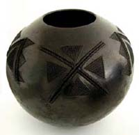
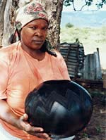
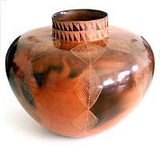
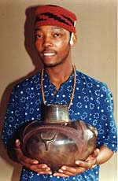

| Nesta Nala &
Clive Sithole
Two South African Zulu potters

Photo:
Collection Axis Gallery/Gary van Wyk & Lisa Brittan, photo Gary
van Wyk
Nesta
Nala (b. 1940) is an award-winning South African Zulu potter.
Nala learnt how to make traditional Zulu
beer pots from her mother Siphiwe, who was also a potter.
She has in turn also taught her daughters Jabu, Zanele and Thembi
Nala the craft. Her cousin Ntombe is also a potter.
In
the mid 1980s, Nala made the transition from rural potter to art
potter, after being highlighted as a master ceramist in Rhoda Levinsohn's
Art and Craft in Southern Africa.
Nala represented South Africa at the Cairo International Biennale
for Ceramics in 1994. She won a first prize at the FNB Vita National
Craft Exhibition in 1995 and another at the national ceramics biennial
in 1996. Her bulbous coil-built, burnished, pit-fired and smoked
pots are embellished with complex raised and incised designs in
the classical ‘amansumpa’ style. The pots are then rubbed
in animal fat and polished. Nala is considered a South African living
national treasure.
Clive
Sithole (b. 1971) is a well known South African Zulu potter.
Sithole initially ran a fashion business, after studying fashion
design at the London International School, Johannesburg, Gauteng.
Photo:
Collection Axis Gallery/Gary van Wyk & Lisa Brittan, photo Gary
van Wyk
Photo:
Anthea Martin. Source: Axis
Gallery
Contra to the tradition that only Zulu women make pottery, he was
inspired in 1986 to take up the craft by Philemon Lerata of the
Pietermaritzburg University’s Ceramics Department. In 1997
he joined the Babumbi Clay Project in Durban and attend ceramic
classes at Durban University.
His pots are made in the traditional Zulu manner by coil-building
and pit-firing. He has won several awards, including an FNB Vita
Craft Now Merit Award in 2000 and a First Prize in Trophy Design
for Pricewaterhouse Coopers.
Thanks to Gary van Wyk of Axis
Gallery for the use of above images.
More Artists of the Week
More Articles
|
{kind=link}
{kind=link}